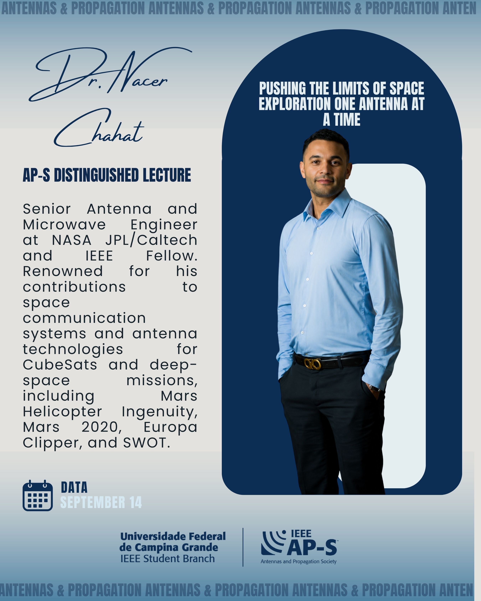

Data: 27 – 30 de Outubro de 2026
Local: Porto, Portugal
A Conferência Internacional de Cidades Inteligentes (ISC2) é o evento anual patrocinado pela IEEE Smart Cities Technical Community. O encontro reúne pesquisadores, engenheiros, planejadores urbanos e formuladores de políticas para discutir as inovações que guiarão o futuro dos ecossistemas urbanos.
Com sua hospitalidade calorosa, cultura vibrante e atmosfera descontraída, a cidade do Porto convida todos os participantes a explorar e desfrutar do evento em um dos polos tecnológicos de maior crescimento em Portugal.
Gestão de recursos hídricos e saneamento urbano com auxílio de IoT e IA.
Distribuição de energia inteligente, microrredes e sustentabilidade energética.
Políticas públicas, engajamento cidadão e planejamento urbano digital.
Sistemas de transporte inteligente, veículos autônomos e otimização de tráfego urbano.
Monitoramento da qualidade do ar, gestão de resíduos e soluções de baixo carbono.

AP-S Distinguished Lecture
Senior Antenna and Microwave Engineer at NASA JPL/Caltech and IEEE Fellow. Renowned for his contributions to space communication systems and antenna technologies for CubeSats and deep-space missions, including Mars Helicopter Ingenuity, Mars 2020, Europa Clipper, and SWOT.
Data: September 14
Local: Universidade Federal de Campina Grande (IEEE Student Branch)
| Submissão de Resumos | 08 de Junho de 2026 |
| Upload do Artigo Completo | 15 de Junho de 2026 |
| Notificação de Aceite | 10 de Julho de 2026 |
| Câmera-Ready (Versão Final) | 15 de Setembro de 2026 |
| Telecomunicando UERJ | September 19, 2026 |